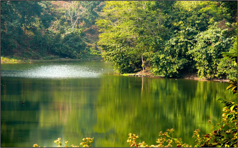

বৈচিত্র্যময় খাগড়াছড়ি
খাগড়াছড়ি-মহালছড়ি-রাঙ্গামাটি সড়কে জেলা সদর থেকে ১১কিঃ মিঃ দক্ষিণে মূল রাস্তা হতে ৪কিঃ মিঃ পশ্চিমে সদর উপজেলার নূনছড়ি মৌজায় চির প্রশান্তিময় দেবতার পুকুরের অবস্থান।
জেলা সদর হতে মাইসছড়ি পর্যন্ত বাসে যাতায়াত করা যায়। মাইসছড়ি হতে নূনছড়ি ছড়া পর্যন্ত হেরিংবোন রাস্তা আছে। জীপ/চাঁন্দের গাড়ী বা পায়ে হেঁটে ঝর্ণামুখ (নূনছড়ি ছড়া), ঝর্ণামুখ থেকে প্রায় ১কিঃ মিঃ পায়ে হেঁটে পাহাড় বেয়ে পাহাড়ের শীর্ষে দেবতার পুকুর।

সদর উপজেলার নূনছড়ি মৌজায় আলুটিলা পর্বত শ্রেণী হতে সৃষ্ট ছড়া নূনছড়ি। নূনছড়ি ছড়ার ক্ষীণ স্রোতের মাঝে রয়েছে প্রকাণ্ড সব পাথর। স্বচ্ছ জলস্রোতে স্থির পাথর মোহিত করে, প্রকৃতির অপূর্ব সাজে মুগ্ধতায় শিহরিত হয় মন। সমুদ্র সমতল হতে প্রায় ১০০০ফুট উচ্চতায় পাহাড়ের চূড়ায় দেবতার পুকুর রূপকথার দেবতার আর্শীবাদের মতো সলিল বারির স্রোতহীন সঞ্চার।
এ পুকুরটির স্বচ্ছ জলরাশির মন ভোলানো প্রশান্তি মূহুর্তের মাঝে পর্যটকদের হৃদয় মন উদাস করে দেয়। এত উঁচু পাহাড় চূড়ায় পুকুরটি নানা রহস্যে ভরপুর। এ পুকুর ত্রিপুরাদের তীর্থক্ষেত্র হিসেবে পরিগণিত। প্রতিবছর চৈত্রসংক্রান্তিতে এখানে তীর্থ মেলা বসে এবং তান্ত্রিক বিধানমতে ত্রিপুরাগণ যাগযজ্ঞাদি করে। ত্রিপুরাদের ভাষায় দেবতার পুকুরের নাম মাতাই পুখির। মাতাই অর্থ দেবতা আর পুখির অর্থ পুকুর।
পুকুরের চতুর্দিকে ঘন বন দেখে মনে হয় যেন সৌন্দর্য্যরে দেবতা স্বয়ংবর নিয়ে দাঁড়িয়ে। কথিত আছে স্থানীয় বাসিন্দাদের জল তৃষ্ণা নিবারণের জন্য জল দেবতা স্বয়ং এ পুকুর খনন করেন। পুকুরের পানিকে স্থানীয় লোকজন দেবতার আশীর্বাদ বলে মনে করেন। প্রচলিত আছে যে, এ পুকুরের পানি কখনো কমে না।
আরও একটি গল্প প্রচলিত আছে যে, এই পুকুর কোন দেবতা দ্বারা নিয়ন্ত্রিত এবং পুকুরের তলায় বহু গুপ্তধন লুকায়িত আছে যা দেবতারা পাহাড়া দিচ্ছে। অনেকের ধারণা এখানে এসে কিছু চাইলে তা পূরণ হয়। এ এলাকাটি ত্রিপুরা অধ্যুষিত।
কথিত আছে বর্তমান দেবতা পুকুর এলাকা এক সময় উঁচু পাহাড়ী অঞ্চল ছিল। এ উঁচু পাহাড়ের পাশে দু’টো জনবসাতি ছিল। এ জনবসতির এ জুমিয়া এক সময় ঐ পাহাড়ে জুম চাষ করত। জুম চাষ করার এক পর্যায়ে ঐ পাহাড়টা আবাদ না করার জন্য তাকে স্বপ্নে বারণ করা হয়। কিন্তু স্বপ্নের গুরুত্ব না দিয়ে এমনকি বারবার একইভাবে স্বপ্নে নিষেধ করা সত্বেও সে যথারীতি জুম চাষ চালিয়ে যায়।
শেষবারে তাকে নরবলী দিয়ে জুমের ফসল ভোগের জন্য বলা হয় এবং তা করলে সে আরো কিছু ধন লাভ করবে বলেও স্বপ্নে জানানো হয়। কিন্তু এ দাবী পূরণে জুয়িার বিশ্বাস এবং সামথ্য কোনটাই ছিল না। এর কিছুদিন পর এক অমাবশ্যার রাতে ঐ স্থানে এক প্রলয়ঙ্করী ভূমিকম্প হয়। সকালে ঘুম থেকে উঠে আশে-পাশের লোকেরা দেখতে পায় জুমের জায়গায় পাহাড়ের উপরে বিরাট এক জলাশয়। এ জলাশয়ই ‘দেবতা পুকুর’ নামে পরিচিত।